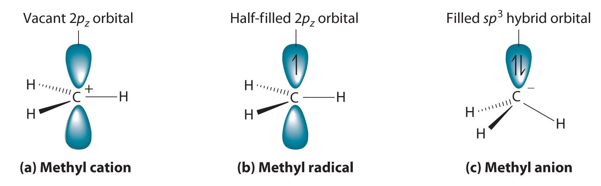

Understanding why organic molecules react as they do requires knowing something about the structure and properties of the transient species that are generated during chemical reactions. Identifying transient intermediates enables chemists to elucidate reaction mechanisms, which often allows them to control the products of a reaction. In designing the synthesis of a molecule, such as a new drug, for example, chemists must be able to understand the mechanisms of intermediate reactions to maximize the yield of the desired product and minimize the occurrence of unwanted reactions. Moreover, by recognizing the common reaction mechanisms of simple organic molecules, we can understand how more complex systems react, including the much larger molecules encountered in biochemistry.
Nearly all chemical reactions, whether organic or inorganic, proceed because atoms or groups of atoms having a positive charge or a partial positive charge interact with atoms or groups of atoms having a negative charge or a partial negative charge. Thus when a bond in a hydrocarbon is cleaved during a reaction, identifying the transient species formed, some of which are charged, allows chemists to determine the mechanism and predict the products of a reaction.
Chemists often find that the reactivity of a molecule is affected by the degree of substitution of a carbon that is bonded to a functional group. These carbons are designated as primary, secondary, or tertiary. A primary carbon is bonded to only one other carbon and a functional group, a secondary carbon is bonded to two other carbons and a functional group, and a tertiary carbon is bonded to three other carbons and a functional group.
Cleaving a C–H bond can generate either –C+ and H−, −C· and H· or −C− and H+, all of which are unstable and therefore highly reactive. The most common species formed is –C+, which is called a carbocationA highly reactive species that can form when a C–H bond is cleaved, carbocations have only six valence electrons and are electrophiles. (part (a) in Figure 24.11 "Transient Intermediates in Organic Reactions"). A carbocation has only six valence electrons and is therefore electron deficient. It is an electrophileAn electron-deficient species that needs electrons to complete its octet. (from “electron” and the Greek suffix phile, meaning “loving”), which is a species that needs electrons to complete its octet. (Recall that electron-deficient compounds, such as those of the group 13 elements, act as Lewis acids in inorganic reactions.) In general, when a highly electronegative atom, such as Cl, is bonded to a carbocation, it draws electrons away from the carbon and destabilizes the positive charge. In contrast, alkyl groups and other species stabilize the positive charge by increasing electron density at the carbocation. Thus a tertiary carbocation (R3C+) is more stable than a primary carbocation (RCH2+).
The reactivity of a molecule is often affected by the degree of substitution of the carbon bonded to a functional group.
Adding one electron to a carbocation produces a neutral species called a radicalHighly reactive species that have an unpaired valence electron.. (For more information on radicals, see Chapter 14 "Chemical Kinetics", Section 14.6 "Reaction Rates—A Microscopic View".) An example is the methyl radical (·CH3), shown in part (b) in Figure 24.11 "Transient Intermediates in Organic Reactions". Because the carbon still has less than an octet of electrons, it is electron deficient and also behaves as an electrophile. Like carbocations, radicals can be stabilized by carbon substituents that can donate some electron density to the electron-deficient carbon center. Like carbocations, a tertiary radical (R3C·) is more stable than a primary radical (RCH2·).
Figure 24.11 Transient Intermediates in Organic Reactions
(a) The simplest carbocation is the methyl cation (CH3+), which has six valence electrons and is an electrophile. Its structure is trigonal planar, with an sp2 hybridized carbon and a vacant p orbital. (b) The methyl radical (·CH3) is a radical that, like the carbocation, is trigonal planar and an electrophile. It is also sp2 hybridized, but there is a single electron in the unhybridized p orbital. (c) The simplest organic carbanion is CH3−, which has a trigonal pyramidal structure with an sp3 hybridized carbon that has a lone pair of electrons. Because it has a strong tendency to share its lone pair with another atom or molecule, a carbanion is a nucleophile.
Adding an electron to a radical produces a carbanionA highly reactive species that can form when a C–H bond is cleaved, carbanions have eight valence electrons and are nucleophiles., which contains a negatively charged carbon with eight valence electrons (part (c) in Figure 24.11 "Transient Intermediates in Organic Reactions"). The methyl anion (CH3−) has a structure that is similar to NH3 with its lone pair of electrons, but it has a much stronger tendency to share its lone pair with another atom or molecule. A carbanion is a nucleophileAn electron-rich species that has a pair of electrons available to be shared with another atom. (from “nucleus” and phile), an electron-rich species that has a pair of electrons available to share with another atom. Carbanions are destabilized by groups that donate electrons, so the relationship between their structure and reactivity is exactly the opposite of carbocations and radicals. That is, a tertiary carbanion (R3C−) is less stable than a primary carbanion (RCH2−). Carbanions are most commonly encountered in organometallic compounds such as methyllithium (CH3Li) or methylmagnesium chloride (CH3MgCl), where the more electropositive metal ion stabilizes the negative charge on the more electronegative carbon atom.
Electrophiles such as carbocations seek to gain electrons and thus have a strong tendency to react with nucleophiles, which are negatively charged species or substances with lone pairs of electrons. Reacting electrophiles with nucleophiles is a central theme in organic reactions.
Electrophiles react with nucleophiles.
Classify each species as an electrophile, a nucleophile, or neither.
Given: molecular formulas
Asked for: mode of reactivity
Strategy:
Determine whether the compound is electron deficient, in which case it is an electrophile; electron rich, in which case it is a nucleophile; or neither.
Solution:
Exercise
Classify each compound as an electrophile, a nucleophile, or neither.
Answer:
The reactivity of a molecule is often affected by the degree of substitution of the carbon bonded to a functional group; the carbon is designated as primary, secondary, or tertiary. Identifying the transient species formed in a chemical reaction, some of which are charged, enables chemists to predict the mechanism and products of the reaction. One common transient species is a carbocation, a carbon with six valence electrons that is an electrophile; that is, it needs electrons to complete its octet. A radical is a transient species that is neutral but electron deficient and thus acts as an electrophile. In contrast, a carbanion has eight valence electrons and is negatively charged. It is an electron-rich species that is a nucleophile because it can share a pair of electrons. In chemical reactions, electrophiles react with nucleophiles.
Arrange CH2F+, CHCl2+, CH3+, and CHF2+ in order of increasing stability. Explain your reasoning.
Arrange CH3CH2+, CHBr2+, CH3+, and CHBrCl+ in order of decreasing stability. Explain your reasoning.
Identify the electrophile and the nucleophile in each pair.
Identify the electrophile and the nucleophile in each pair.
CHF2+ < CHCl2+ < CH2F+ < CH3+; electronegative substituents destabilize the positive charge. The greater the number of electronegative substituents and the higher their electronegativity, the more unstable the carbocation.
Draw Lewis electron structures of the products of carbon–hydrogen cleavage reactions. What is the charge on each species?
Identify the electrophile and the nucleophile in each reaction; then complete each chemical equation.